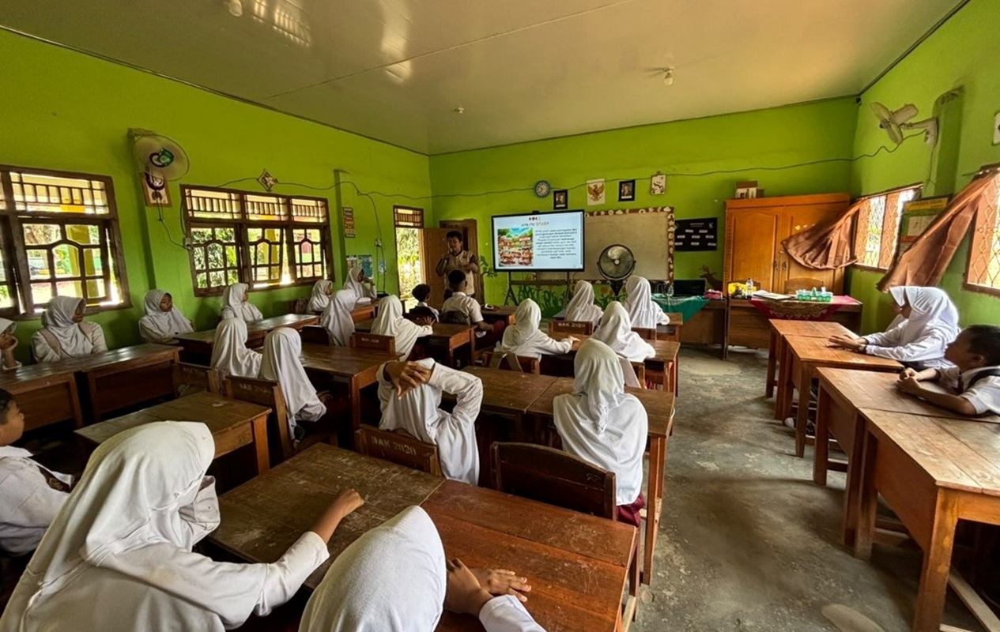

Itera dan BPBD Lampung Perkuat Kesiapsiagaan Bencana Pelajar di Lampung Tengah

ITERA NEWS – Institut Teknologi Sumatera (Itera) bersama Badan Penanggulangan Bencana Daerah (BPBD) Provinsi Lampung memperkuat kesiapsiagaan bencana di lingkungan sekolah melalui kegiatan Satuan Pendidikan Aman Bencana (SPAB). Kegiatan dilaksanakan di SDN 01 Setia Bhakti dan SDN 02 Setia Bhakti, Lampung Tengah, Senin, 7 September 2026.
Kegiatan tersebut menjadi upaya bersama untuk meningkatkan pengetahuan dan kapasitas warga sekolah dalam mengenali potensi bencana serta menentukan langkah yang tepat sebelum, saat, dan setelah bencana terjadi.
Kolaborasi Tim Dosen Berbagai Bidang
Dalam kegiatan ini, BPBD Provinsi Lampung berkolaborasi dengan dosen Itera dari berbagai bidang keilmuan. Tim dosen yang terlibat yaitu Rizqi Aulia, S.T., M.T., dan Zulfikar Adlan Nadzir, S.T., M.Sc., dari Program Studi Teknik Geomatika, serta Muhammad Eval Juni Wijaya, S.T., M.Eng., dan Rezki Naufan Hendrawan, S.T., M.T., dari Program Studi Teknik Geologi.
Peserta diperkenalkan pada potensi risiko bencana di lingkungan sekitar sekolah, langkah-langkah mitigasi, serta tindakan yang perlu dilakukan untuk mengurangi risiko dan meningkatkan keselamatan ketika terjadi bencana.
Pendekatan Edukatif dan Interaktif
Materi SPAB disampaikan melalui pendekatan edukatif dan interaktif kepada siswa dan guru. Peserta diperkenalkan pada potensi risiko bencana di lingkungan sekitar sekolah, langkah-langkah mitigasi, serta tindakan yang perlu dilakukan untuk mengurangi risiko dan meningkatkan keselamatan ketika terjadi bencana.
Keterlibatan dosen Itera turut memperkaya kegiatan melalui perspektif keilmuan Teknik Geomatika dan Teknik Geologi. Peserta dikenalkan pada informasi geospasial, kondisi geologi, serta karakteristik wilayah yang dapat berkaitan dengan potensi bencana.
Membangun Kesadaran dan Budaya Aman Bencana
Kolaborasi lintas sektor dan disiplin keilmuan tersebut diharapkan dapat membangun kesadaran kesiapsiagaan sejak dini sekaligus mendorong terbentuknya budaya aman bencana di lingkungan satuan pendidikan.
Melalui kegiatan SPAB ini, Itera dan BPBD Provinsi Lampung berharap pengetahuan dan keterampilan yang diperoleh dapat diterapkan oleh warga sekolah dalam menghadapi kondisi darurat. Upaya tersebut sekaligus mendukung terwujudnya lingkungan pendidikan yang lebih aman, tanggap, dan tangguh menghadapi bencana. (Rilis/Humas)